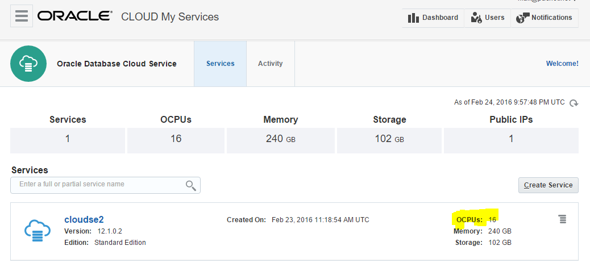
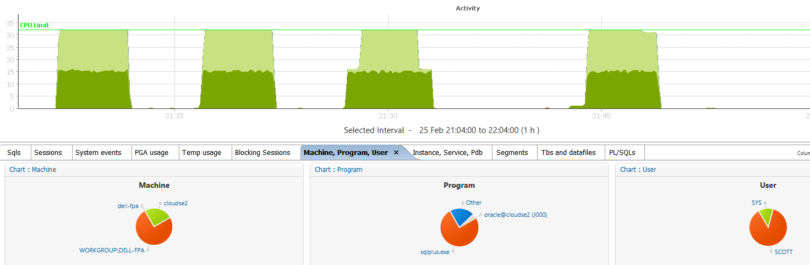

From 12.1.0.2 the Standard Edition – now called Standard Edition 2 – has a few limitations that were not there in SE and SE1. One of them is the limitation to 16 threads. Let’s see how it behaves when running 32 sessions working in CPU.
What to provision quickly a host with more than 16 CPU? Easy with DBaaS. Here is a database on the Oracle Cloud Services, with 16 OCPU which means 32 threads:  Here is the definition from the OS seeing 32 cores (which are actually virtual, equivalent to 16 hyper-threaded cores)
Architecture: x86_64 CPU op-mode(s): 32-bit, 64-bit Byte Order: Little Endian CPU(s): 32 On-line CPU(s) list: 0-31 Thread(s) per core: 1 Core(s) per socket: 32 Socket(s): 1 NUMA node(s): 1 Vendor ID: GenuineIntel CPU family: 6 Model: 62 Stepping: 4 CPU MHz: 2992.876 BogoMIPS: 5985.75 Hypervisor vendor: Xen Virtualization type: full L1d cache: 32K L1i cache: 32K L2 cache: 256K L3 cache: 25600K NUMA node0 CPU(s): 0-31
I’m running something like that:
set echo on timing on connect scott/tiger @ //140.86.5.120/pdb.trial.oraclecloud.internal:dedicated exec declare t date:=sysdate; begin loop exit when sysdate>t+&1./24/60/60; end loop; end exitand the same with shared and pooled connections. Finally, I run the same from a job:
variable j number exec dbms_job.submit(:j,'declare t date:=sysdate; begin loop exit when sysdate>t+&1./24/60/60; end loop; end;');
I’ve run those from 32 parallel sessions and got the following: 
You can see my 32 sessions active, but only 16 at a time being in CPU. The others are waiting on the light green ‘resmgr: cpu quantum’ which is the Resource Manager used to limit to 16 threads in CPU. No way to bypass: whatever the connection type is we are limited to 16 sessions active on CPU.
From ‘top’ we can check that each session has the same amout of CPU time allowed:
SQL> Disconnected from Oracle Database 12c Standard Edition Release 12.1.0.2.0 - 64bit Production^M top - 20:59:09 up 2 days, 9:34, 1 user, load average: 9.88, 4.23, 1.68 Tasks: 644 total, 13 running, 631 sleeping, 0 stopped, 0 zombie Cpu(s): 1.1%us, 0.4%sy, 0.0%ni, 98.4%id, 0.1%wa, 0.0%hi, 0.0%si, 0.1%st Mem: 247354096k total, 135891524k used, 111462572k free, 785304k buffers Swap: 4194300k total, 0k used, 4194300k free, 131373540k cached PID USER PR NI VIRT RES SHR S %CPU %MEM TIME+ COMMAND 5586 root 20 0 2785m 41m 9212 S 72.3 0.0 0:00.37 /u01/app/oracle/pr 3796 oracle 20 0 56.6g 28m 26m S 43.0 0.0 1:11.87 oracleSE2 (LOCAL=N 3768 oracle 20 0 56.6g 44m 40m S 41.0 0.0 1:13.15 oracleSE2 (LOCAL=N 3774 oracle 20 0 56.6g 28m 25m S 41.0 0.0 1:12.64 oracleSE2 (LOCAL=N 3792 oracle 20 0 56.6g 28m 25m S 41.0 0.0 1:12.08 oracleSE2 (LOCAL=N 3800 oracle 20 0 56.6g 28m 26m S 41.0 0.0 1:11.67 oracleSE2 (LOCAL=N 3802 oracle 20 0 56.6g 28m 26m S 41.0 0.0 1:11.78 oracleSE2 (LOCAL=N 3804 oracle 20 0 56.6g 28m 26m S 41.0 0.0 1:11.55 oracleSE2 (LOCAL=N 3824 oracle 20 0 56.6g 28m 26m S 41.0 0.0 1:11.21 oracleSE2 (LOCAL=N 3826 oracle 20 0 56.6g 28m 26m S 41.0 0.0 1:11.15 oracleSE2 (LOCAL=N 3832 oracle 20 0 56.6g 28m 26m S 41.0 0.0 1:11.10 oracleSE2 (LOCAL=N 3776 oracle 20 0 56.6g 28m 25m S 39.1 0.0 1:12.55 oracleSE2 (LOCAL=N ...
That was with dedicated sessions (SERVER=dedicated)
Here are the processes with shared servers (SERVER=shared):
PID USER PR NI VIRT RES SHR S %CPU %MEM TIME+ COMMAND 35128 oracle 20 0 56.6g 24m 22m R 58.1 0.0 1:01.94 ora_j011_SE2 35140 oracle 20 0 56.6g 24m 21m R 58.1 0.0 1:01.18 ora_j017_SE2 35154 oracle 20 0 56.6g 24m 21m R 58.1 0.0 1:00.29 ora_j024_SE2 2849 oracle 20 0 56.6g 283m 279m R 56.2 0.1 1:08.65 ora_j000_SE2 35116 oracle 20 0 56.6g 24m 21m S 56.2 0.0 1:02.26 ora_j005_SE2 35124 oracle 20 0 56.6g 24m 21m S 56.2 0.0 1:02.06 ora_j009_SE2 35130 oracle 20 0 56.6g 24m 21m S 56.2 0.0 1:01.87 ora_j012_SE2 34367 oracle 20 0 56.6g 35m 32m S 54.3 0.0 1:06.10 ora_j002_SE2 ...
or with resident connection pooling (SERVER=pooled):
PID USER PR NI VIRT RES SHR S %CPU %MEM TIME+ COMMAND 17227 oracle 20 0 56.6g 26m 23m R 59.7 0.0 1:08.01 ora_l035_SE2 17170 oracle 20 0 56.6g 26m 23m R 57.8 0.0 1:15.21 ora_l013_SE2 17176 oracle 20 0 56.6g 26m 23m R 57.8 0.0 1:14.87 ora_l016_SE2 17205 oracle 20 0 56.6g 26m 23m S 57.8 0.0 1:08.02 ora_l024_SE2 17207 oracle 20 0 56.6g 26m 23m R 57.8 0.0 1:07.90 ora_l025_SE2 17162 oracle 20 0 56.6g 26m 23m R 55.9 0.0 1:15.47 ora_l009_SE2 17174 oracle 20 0 56.6g 26m 23m S 55.9 0.0 1:14.80 ora_l015_SE2 17225 oracle 20 0 56.6g 26m 23m S 55.9 0.0 1:08.30 ora_l034_SE2 17201 oracle 20 0 56.6g 26m 23m R 54.0 0.0 1:08.11 ora_l022_SE2 17203 oracle 20 0 56.6g 26m 23m S 54.0 0.0 1:08.15 ora_l023_SE2 17166 oracle 20 0 56.6g 26m 23m R 52.0 0.0 1:15.33 ora_l011_SE2 17180 oracle 20 0 56.6g 26m 23m R 52.0 0.0 1:14.60 ora_l018_SE2 17209 oracle 20 0 56.6g 26m 23m R 52.0 0.0 1:08.08 ora_l026_SE2 17223 oracle 20 0 56.6g 26m 23m S 52.0 0.0 1:08.18 ora_l033_SE2 17182 oracle 20 0 56.6g 26m 23m R 50.1 0.0 1:14.48 ora_l019_SE2 ...
Same with jobs:
PID USER PR NI VIRT RES SHR S %CPU %MEM TIME+ COMMAND 35128 oracle 20 0 56.6g 24m 22m R 58.1 0.0 1:01.94 ora_j011_SE2 35140 oracle 20 0 56.6g 24m 21m R 58.1 0.0 1:01.18 ora_j017_SE2 35154 oracle 20 0 56.6g 24m 21m R 58.1 0.0 1:00.29 ora_j024_SE2 2849 oracle 20 0 56.6g 283m 279m R 56.2 0.1 1:08.65 ora_j000_SE2 35116 oracle 20 0 56.6g 24m 21m S 56.2 0.0 1:02.26 ora_j005_SE2 35124 oracle 20 0 56.6g 24m 21m S 56.2 0.0 1:02.06 ora_j009_SE2 35130 oracle 20 0 56.6g 24m 21m S 56.2 0.0 1:01.87 ora_j012_SE2 34367 oracle 20 0 56.6g 35m 32m S 54.3 0.0 1:06.10 ora_j002_SE2 ...
and I also tried with the new 12c threaded processes (DEDICATED_THROUGH_BROKER_listener=true):
top - 21:13:33 up 1 day, 9:49, 0 users, load average: 7.54, 4.81, 3.58 Tasks: 590 total, 17 running, 573 sleeping, 0 stopped, 0 zombie Cpu(s): 1.3%us, 0.3%sy, 0.0%ni, 98.2%id, 0.1%wa, 0.0%hi, 0.0%si, 0.1%st Mem: 247354096k total, 135538012k used, 111816084k free, 700228k buffers Swap: 4194300k total, 0k used, 4194300k free, 131260340k cached PID USER PR NI VIRT RES SHR S %CPU %MEM TIME+ COMMAND 58046 oracle 20 0 63.8g 886m 689m S 54.8 0.4 5:24.47 ora_u005_SE2 58049 oracle 20 0 63.8g 886m 689m R 54.8 0.4 5:23.70 ora_u005_SE2 58065 oracle 20 0 63.8g 886m 689m R 52.8 0.4 1:38.75 ora_u005_SE2 58043 oracle 20 0 63.8g 886m 689m S 50.9 0.4 5:24.19 ora_u005_SE2 58045 oracle 20 0 63.8g 886m 689m S 50.9 0.4 5:24.21 ora_u005_SE2 58053 oracle 20 0 63.8g 886m 689m R 50.9 0.4 1:36.28 ora_u005_SE2 58061 oracle 20 0 63.8g 886m 689m R 50.9 0.4 1:36.10 ora_u005_SE2 58067 oracle 20 0 63.8g 886m 689m R 50.9 0.4 1:12.89 ora_u005_SE2 ...
Different processes but same behavior: running 32 session on SE2 gives 50% of CPU resources to each session because of the limitation of 16 threads.
After lot of tests, some of them with DML to so that LGWR and DBWR has something to do, I’ve checked which sessions have waited on that Resource Manager event:
SQL> select distinct program,username from v$session_event join v$session using(sid) where v$session_event.event like 'resmgr:cpu quantum' PROGRAM USERNAME ------------------------------ ------------------------------ sqlplus.exe SYS sqlplus.exe SCOTT JDBC Thin Client SYS
This proves that only user sessions are limited by SE2, and you can see it’s the case for SYS as well as other users.
Talking about SYS, I’ve run 16 sessions as SYS and 16 sessions as SCOTT:
73056 oracle 20 0 56.6g 25m 23m S 80.3 0.0 0:51.58 oracleSE2 (LOCAL=NO) 73058 oracle 20 0 56.6g 25m 23m S 80.3 0.0 0:51.36 oracleSE2 (LOCAL=NO) 73064 oracle 20 0 56.6g 25m 23m S 80.3 0.0 0:51.34 oracleSE2 (LOCAL=NO) 73052 oracle 20 0 56.6g 25m 23m R 80.0 0.0 0:51.71 oracleSE2 (LOCAL=NO) 73097 oracle 20 0 56.6g 25m 23m R 80.0 0.0 0:51.21 oracleSE2 (LOCAL=NO) 73103 oracle 20 0 56.6g 25m 23m R 80.0 0.0 0:51.02 oracleSE2 (LOCAL=NO) 73111 oracle 20 0 56.6g 25m 23m R 80.0 0.0 0:50.91 oracleSE2 (LOCAL=NO) 73117 oracle 20 0 56.6g 25m 23m R 79.6 0.0 0:50.89 oracleSE2 (LOCAL=NO) 73101 oracle 20 0 56.6g 25m 23m R 79.3 0.0 0:50.87 oracleSE2 (LOCAL=NO) 73050 oracle 20 0 56.6g 25m 23m S 79.0 0.0 0:51.72 oracleSE2 (LOCAL=NO) 73099 oracle 20 0 56.6g 25m 23m S 78.3 0.0 0:51.10 oracleSE2 (LOCAL=NO) 73060 oracle 20 0 56.6g 25m 23m S 78.0 0.0 0:51.23 oracleSE2 (LOCAL=NO) 73108 oracle 20 0 56.6g 25m 23m R 78.0 0.0 0:50.98 oracleSE2 (LOCAL=NO) 73113 oracle 20 0 56.6g 25m 23m S 78.0 0.0 0:50.90 oracleSE2 (LOCAL=NO) 73115 oracle 20 0 56.6g 25m 23m R 78.0 0.0 0:50.84 oracleSE2 (LOCAL=NO) 73106 oracle 20 0 56.6g 25m 23m R 77.3 0.0 0:50.90 oracleSE2 (LOCAL=NO) 72455 oracle 20 0 56.6g 46m 42m R 7.0 0.0 0:58.55 oracleSE2 (LOCAL=NO) 72459 oracle 20 0 56.6g 28m 25m S 7.0 0.0 0:58.38 oracleSE2 (LOCAL=NO) 72461 oracle 20 0 56.6g 28m 25m S 7.0 0.0 0:58.12 oracleSE2 (LOCAL=NO) 72463 oracle 20 0 56.6g 28m 26m S 7.0 0.0 0:58.17 oracleSE2 (LOCAL=NO) 72465 oracle 20 0 56.6g 28m 25m S 7.0 0.0 0:58.08 oracleSE2 (LOCAL=NO) 72467 oracle 20 0 56.6g 28m 26m S 7.0 0.0 0:58.01 oracleSE2 (LOCAL=NO) 72471 oracle 20 0 56.6g 28m 26m S 7.0 0.0 0:57.89 oracleSE2 (LOCAL=NO) 72469 oracle 20 0 56.6g 28m 25m S 6.6 0.0 0:57.87 oracleSE2 (LOCAL=NO) 72473 oracle 20 0 56.6g 28m 26m S 6.6 0.0 0:57.81 oracleSE2 (LOCAL=NO) 72477 oracle 20 0 56.6g 28m 26m S 6.6 0.0 0:57.73 oracleSE2 (LOCAL=NO) 72489 oracle 20 0 56.6g 28m 26m S 6.6 0.0 0:57.64 oracleSE2 (LOCAL=NO) 72493 oracle 20 0 56.6g 28m 26m S 6.6 0.0 0:57.45 oracleSE2 (LOCAL=NO) 72457 oracle 20 0 56.6g 28m 26m S 6.3 0.0 0:58.59 oracleSE2 (LOCAL=NO) 72491 oracle 20 0 56.6g 28m 26m R 6.0 0.0 0:57.65 oracleSE2 (LOCAL=NO) 72481 oracle 20 0 56.6g 28m 25m R 4.6 0.0 0:57.73 oracleSE2 (LOCAL=NO) 72475 oracle 20 0 56.6g 28m 25m S 3.3 0.0 0:57.67 oracleSE2 (LOCAL=NO)
Here you see that not all sessions are equal. Some are able to run 80% of their time in CPU and the others less than 10%
Let’s see more detail from Orachrome Lighty:
Here it’s clear. the SYS session had higher priority. They were able to run 80% of their time in CPU, and only 20% waiting. The SCOTT session here had only 10% of their time in CPU.
The first observation is that only 16 CPU threads are available for user sessions in a SE2 instance. Yes it is a limitation that was not there in SE but remember that SE comes from a time where only few cores were available on servers. My experience is that most of the Standard Edition database I’ve seen can run with optimal performance with only 4 or 5 active sessions in CPU on average. And I’m talking about 10000 queries per second OLTP applications here. If you reach 16 AAS in CPU then you should look at the queries that read millions of logical reads and you may have some tuning to do on them.
The second observation is that you should be very careful when running jobs as SYS (maintenance, monitoring). They have a high priority but still count within the 16 threads limitation, so the user session become very limited.
{kind=link}
{kind=link}
{kind=link}
Hello Franck I just did the same testing with dedicated connection , I will send you a link as soon as I fire up my blog , but my results are the same as yours. Once again great work Franck…
Thanks Franck
Thank you for publishing this, it is a better proof than I have managed. With regard to the SYS sessions’ priority, your figures are close to those one would expect from the Resource Manager DEFAULT_PLAN:
It is of course not permitted to configure the Resource Manager in SE, but it looks as though the Default Plan is still in effect. Until the maintenance window opens, of course.